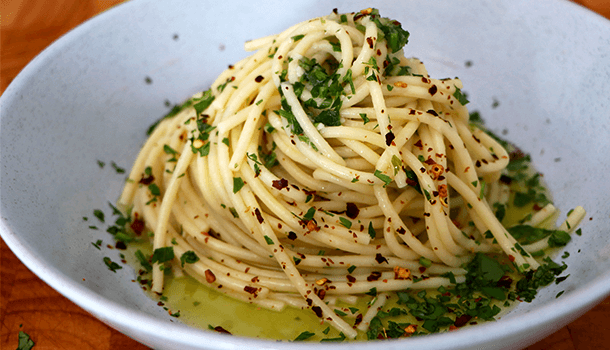

Aglio E Olio

Aglio E Olio Recipe
Spaghetti aglio olio e peperoncino is one of the world’s top ten dishes and it’s not hard to understand why! With just a couple of ingredients and barely any time, you can serve up one of the most traditional Italian dishes that exists: Spaghetti aglio e olio. The most important thing to remember is to cook your pasta al dente and use the best quality extra virgin olive oil you can find. Give it an extra kick with fresh or dried peperoncino and it really is the perfect match.
Ingredients
- Extra virgin olive oil
- Fresh bunch of parsley
- 2 cloves of garlic (1 clove per person)
- 300g/10.5oz pasta
- Salt
- 5-6 tablespoons extra virgin olive oil
Steps
- Spaghetti aglio olio requires a large pot full of boiling water, so step one is to get this on the stove. Once it boils, add a pinch or two of sea salt.
- While you are waiting you can prepare all of your ingredients. Finely slice the garlic cloves before cutting them into thin strips and then again into even smaller pieces.
- Now, chop up the parsley into small pieces, making sure to cop the stems finely too!
- Place your frypan on the stove and turn it up to a medium heat. Once it has started to warm add a generous amount of EVOO, and the garlic, gently mixing it into the oil using a wooden spoon.
- Once this has simmered for around 3-4 minutes, get a ladle full of pasta water and add it to the garlic mix.
- Keep an eye on the pasta cooking, and cook it between 30 seconds to 1 minute less than the packet instructions, before straining and adding it to the pan. You can use a set of long tongs to do this, adding a small amount of pasta water as you transfer the spaghetti.
- Mix the pasta through the oil really well, before sprinkling a very generous amount of the chopped parsley into the pan and mixing again.
- Increase the temperature on your stove to a HIGH heat and continue to stir for one last minute allowing the spaghetti aglio olio to really dance together in the pan and smother one another.
- Done